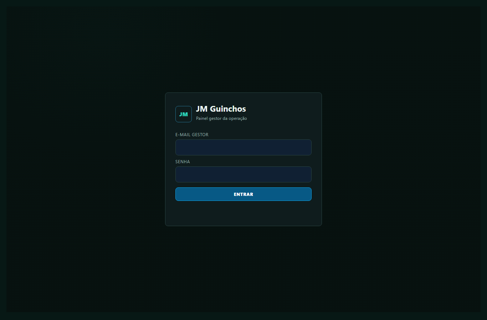
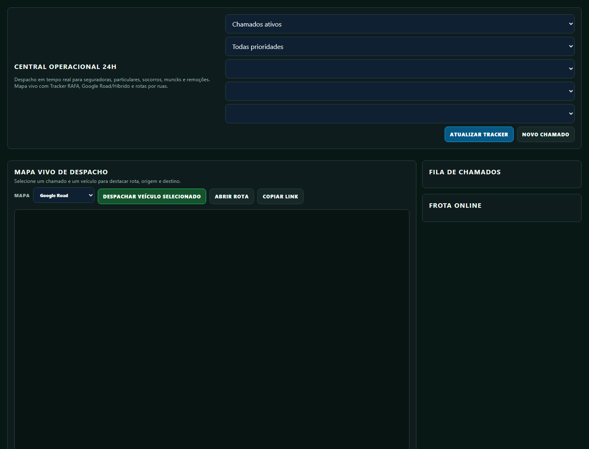
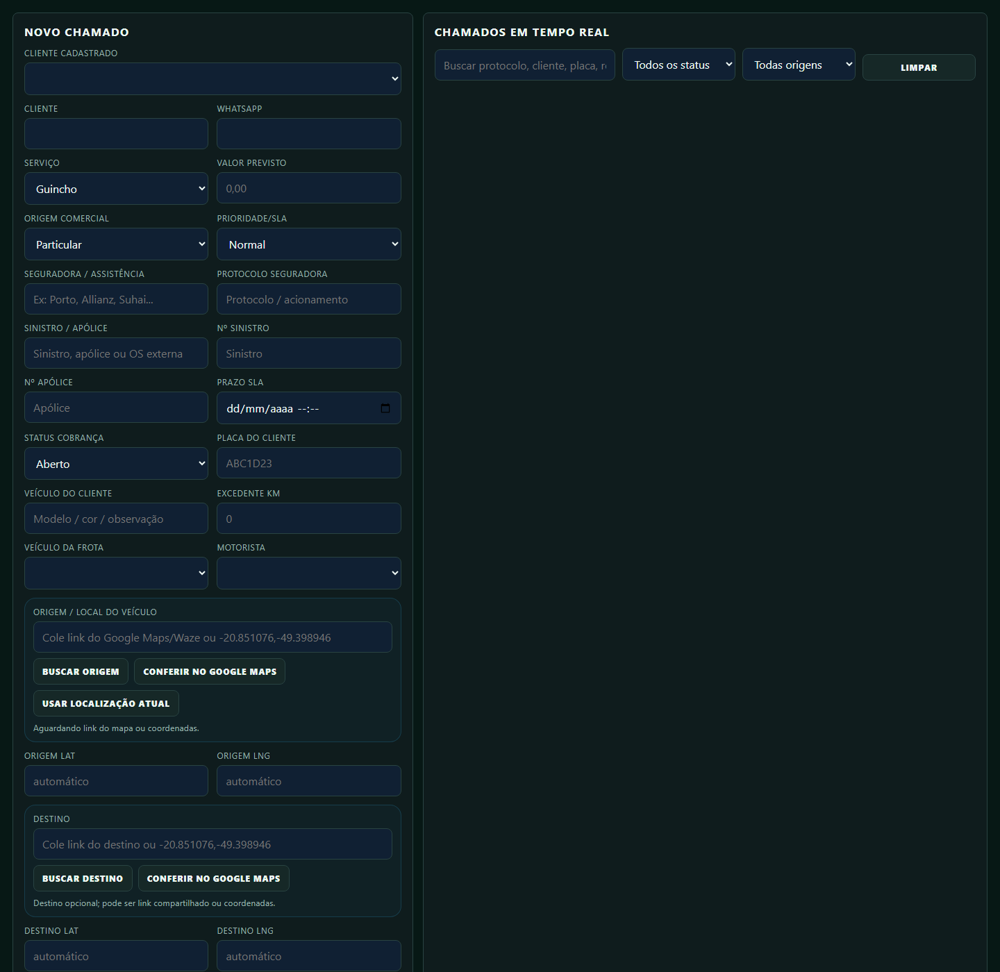
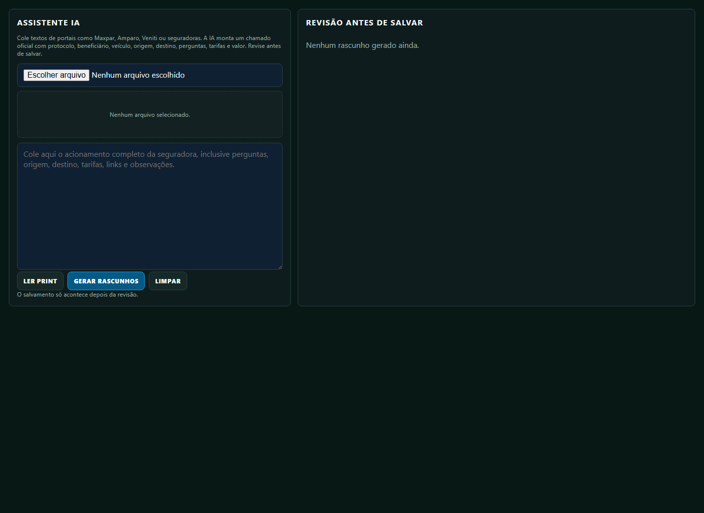
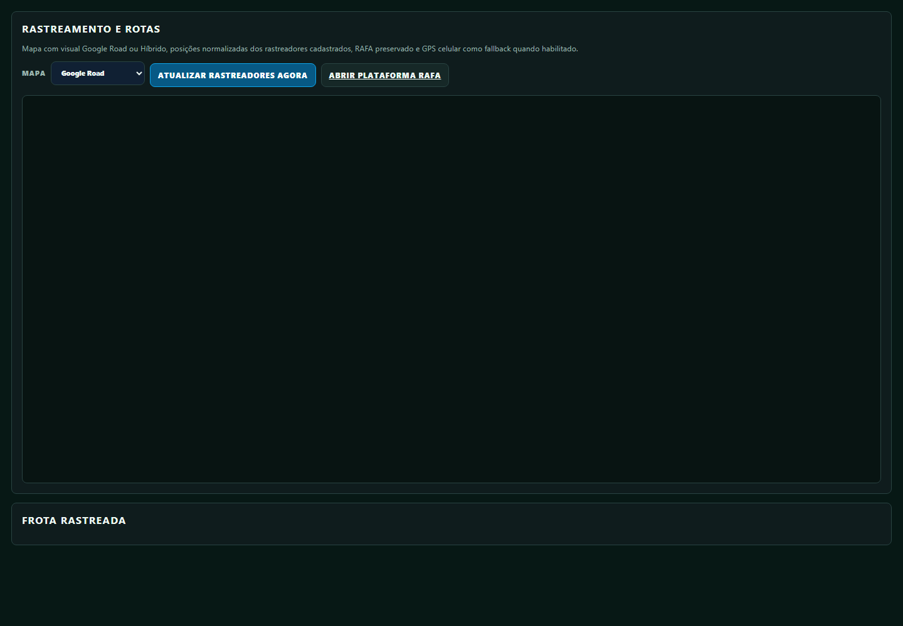
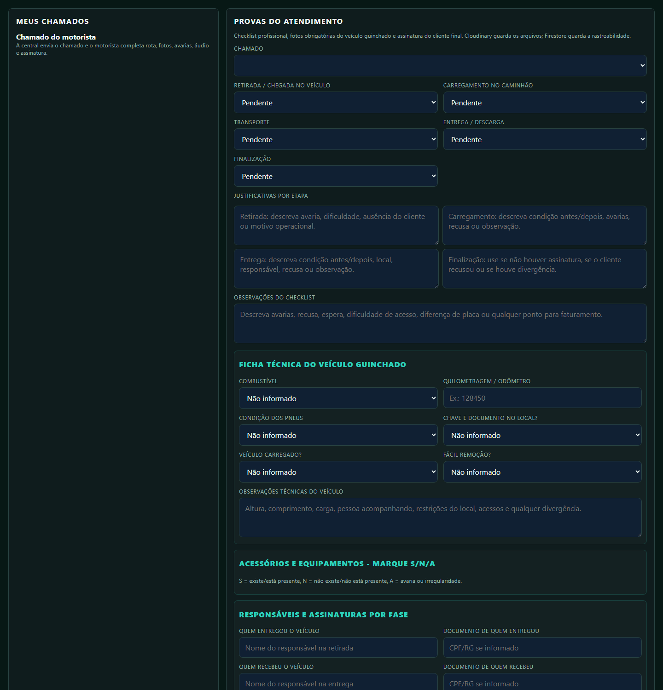
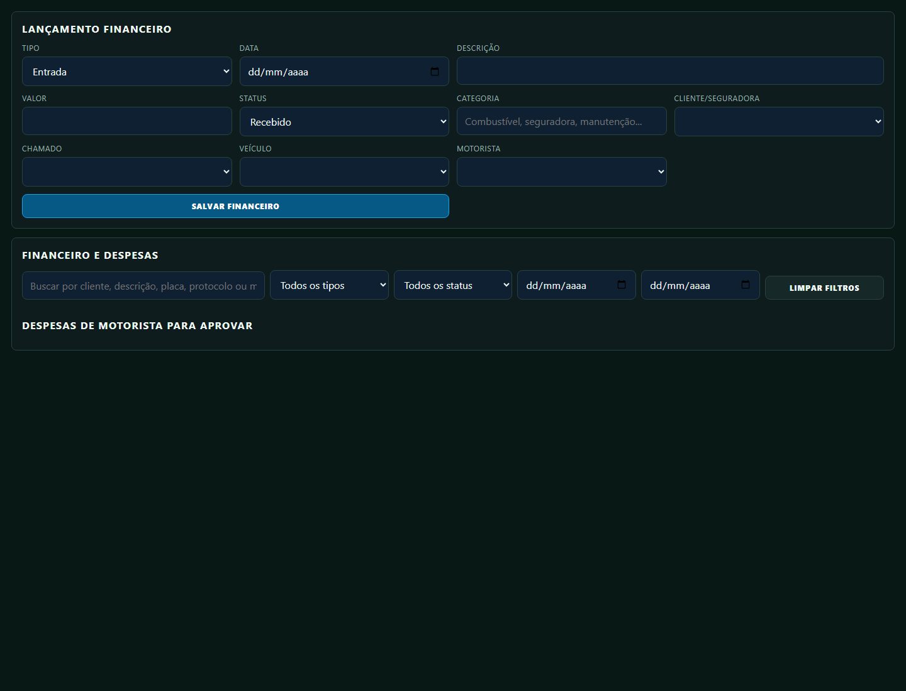

Resumo da função da Gabriela
Regra principal: chamado sem dados mínimos não deve ser despachado; chamado sem evidências não deve ser finalizado.
Rotina diária recomendada
1. Entrada no sistema
Use a tela de gestão para acessar o painel administrativo. Se cair no painel do motorista, a conta está com perfil errado ou cache antigo; peça ajuste do usuário antes de operar.
GestãoLogísticaAdmin
2. Central Operacional
Esta é a tela para trabalhar durante o plantão. Ela concentra filtros, mapa de despacho, fila de chamados e frota online.
Veja os chamados ativos e priorize urgências.
Verifique se há veículo/motorista disponível.
Selecione chamado e veículo antes de enviar a rota.

3. Novo chamado e rota
Use quando o atendimento entrar por telefone, WhatsApp ou pedido manual. Preencha com calma: cliente, WhatsApp, seguradora, protocolo, placa, veículo, motorista, origem e destino.
Campos que não podem ficar errados
- Origem/local do veículo: onde o motorista vai buscar.
- Destino: pátio, oficina, residência ou base indicada.
- Veículo da frota e motorista: se isso estiver errado, o motorista certo não vê o chamado.
- Valor previsto: não aceite alteração automática sem revisar.
- SLA/prioridade: define a urgência do atendimento.
Antes de registrar, confira se a rota está coerente. Endereço incompleto ou coordenada 0,0 gera erro operacional.

4. Assistente IA para seguradoras
Use quando chegar texto grande de portal, e-mail, WhatsApp ou PDF convertido. Cole o acionamento completo e clique para gerar rascunho. A IA ajuda, mas Gabriela continua responsável por revisar.
Como usar sem erro
- Cole o texto completo da seguradora, incluindo origem, destino, placa, protocolo, tarifas e observações.
- Clique em Gerar rascunhos.
- Revise se origem e destino não foram misturados.
- Confira valor oficial, tarifas e status externo.
- Depois de revisar, crie o chamado oficial.
Se o portal externo vier como "Finalizado", isso não significa finalizar internamente. O sistema guarda isso como status externo para conferência.

5. Mapa, rota e Tracker RAFA
O mapa serve para enxergar posição, rota, rastreador e GPS do celular quando habilitado. Se a rota não calcular, revise os endereços e links do Maps/Waze antes de culpar o motorista.

6. Evidências do motorista
Gabriela deve cobrar do motorista evidências completas. Isso protege a empresa contra contestação da seguradora, cliente e financeiro.
O motorista deve enviar
- Fotos antes da retirada: frente, traseira, laterais e painel/odômetro.
- Fotos do veículo carregado e fotos na entrega.
- Registro de avarias, acessórios, combustível, pneus e chaves/documentos.
- Assinatura do cliente ou justificativa clara quando não houver assinatura.
- Áudios ou observações quando precisar explicar algo importante.
Não finalize chamado com evidência incompleta sem autorização e justificativa.

7. Financeiro e fechamento
Depois que o atendimento terminou, confira se o chamado tem valor, despesas, pedágio e evidências. O fechamento só deve seguir quando o atendimento estiver coerente.
Valor correto, evidências completas e status final conferido.
Falta foto, assinatura, rota, despesa ou valor de pedágio.
Motorista errado, endereço duvidoso, chamado sem prova ou cliente contestando.

Problemas comuns e o que verificar
Checklist final de cada chamado
- Cliente, seguradora, protocolo e placa conferidos.
- Origem e destino conferidos no mapa.
- Veículo da frota e motorista definidos.
- Valor, km e pedágio revisados.
- Motorista recebeu o chamado e iniciou atendimento.
- Fotos, avarias, assinatura, áudios e despesas conferidos.
- Status final aplicado somente depois da prova completa.
- Financeiro/faturamento revisado.
Frase de controle: "Chamado bom é chamado com rota certa, motorista certo, valor certo e prova completa."